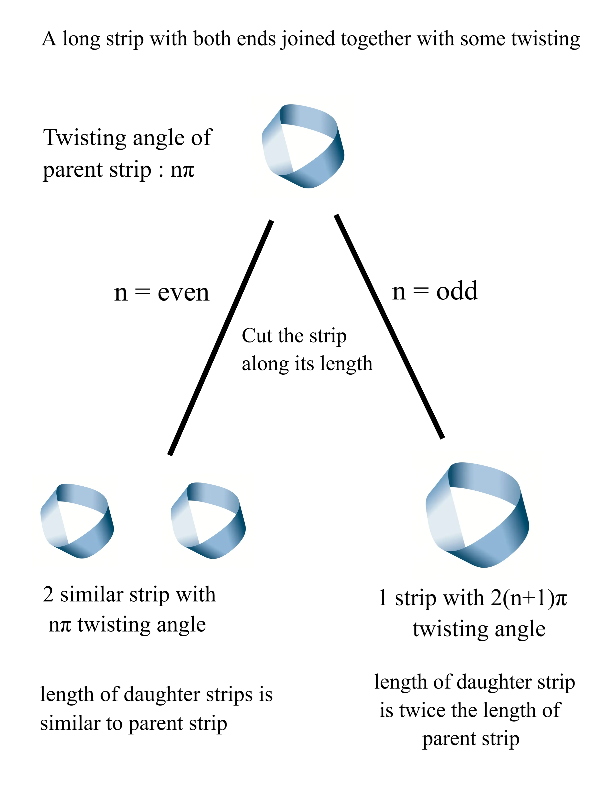

The Möbius Law
Introduction
I call this the Möbius Law—it's a phenomenon I discovered while experimenting with Möbius strips a few years ago.
If we take a strip of paper and twist one end (by 180 degrees) of the paper keeping the other end fixed and glue the ends together, we get a Möbius strip. In this case, the twisting angle between the same plane on both ends is π. But what happens if twisting angle between the same plane on both ends is nπ?
And then, we cut the strip by the length of the strip of paper: we observe an interesting, strict topological pattern across parities.

Technical Details & Approach
Setup and Definitions
Take a strip of paper and rotate(twist) one end by π (180 degrees) of the paper keeping the other end fixed, and glue the ends together:
- The twisting angle, nπ, between the same plane on both ends (where n represents the number of half-twists).
- n = 0 corresponds to an ordinary, untwisted cylindrical loop.
- n = 1 corresponds to the canonical Möbius strip (single half-twist, phase π).
- Now, cut the strip continuously along the length of the strip of paper (down its centerline).
We Observe an Interesting Pattern (Statement of the Law)
Given a closed band formed with phase difference nπ between end planes, cutting it along its centerline produces:
If n is odd ⇒ 1 strip of 2(n + 1)π phase difference (double length)
Examples
| n (Before Cut) | Twist Phase | Parity | Topological Result After Centerline Cut |
|---|---|---|---|
| 1 | π (Standard Möbius) | Odd | 1 single strip, double length, phase 2(1 + 1)π = 4π |
| 2 | 2π (Full twist) | Even | 2 linked separate strips, each phase 2π, linked 1 time |
| 3 | 3π (Triple half-twist) | Odd | 1 single strip, double length, phase 2(3 + 1)π = 8π |
| 4 | 4π (Double twist) | Even | 2 linked separate strips, each phase 4π, linked 2 times |
Insight
The fundamental symmetry breaking behind this law can be stated as:
“Even the strip doesn't want its offspring to be odd.”
In scientific terms, every strip emerging from a centerline cut is strictly two-sided and orientable (even phase). The cut operation physically forbids the creation of one-sided offspring: only the parent strip can possess non-orientable topology; nothing produced by a centerline cut ever does.
Topological Mechanism
This behavior is governed by the boundary structure of the strip prior to cutting:
- Odd n (non-orientable): An odd-twist band is one-sided and bounded by a single continuous closed curve that winds twice around the core before closing. Cutting down the centerline is geometrically equivalent to tracing parallel to this solitary edge, resulting in one continuous ribbon of double length.
- Even n (orientable): An even-twist band is two-sided and possesses two distinct, independent boundary edges. Cutting along the centerline cleanly partitions the two boundaries into two separate bands, linked together due to the initial spatial rotation.
Relationship to Established Mathematics
This phenomenon corresponds to a classical result in geometric topology termed paradromic rings, first systematically investigated in 1847 by German mathematician Johann Benedict Listing (who coined the term topology).
Further Explorations
- Off-Center Cuts: Cutting at a fractional width (e.g., 1/3 from an edge) creates interlocking rings of unequal widths and distinct twist configurations.
- Recursive Cutting: Applying the transformation recursively across consecutive generations to map branching topological trees.
- Linking Numbers in Knot Theory: Rigorously formalizing the Gauss linking integral for higher-order even parity strips.
References & Links
- › J. B. Listing, “Vorstudien zur Topologie” (Göttinger Studien, 1847) — Foundational Analysis of Paradromic Rings
- › Research paper DOI and formal topological documentation will be updated soon.